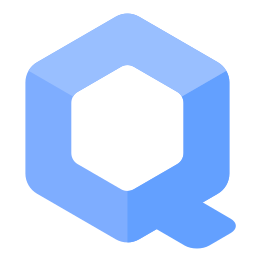

We believe security software like Whonix needs to remain Open Source and independent. Would you help sustain and grow the project? Learn more about our 14 year success story and maybe DONATE!
Template:W-APT-Repository-Key
Template Documentation
This wiki template is used standalone on the chroot wiki page.
Template
Complete the following steps to add the Whonix Signing Key to the system's APT keyring.
Open a terminal.
1
Package curl needs to be installed.
Install package(s) curl following these
instructions:
1 Platform specific notice.
- Non-Qubes-Whonix: No special notice.
- Qubes-Whonix: In Template.
2
 Update the package lists and upgrade the system.
Update the package lists and upgrade the system.
sudo apt update && sudo apt full-upgrade
3
Install the curl package(s).
Using apt command line
 <code>--no-install-recommends</code> option is in most cases
optional.
<code>--no-install-recommends</code> option is in most cases
optional.
sudo apt install --no-install-recommends curl
4 Platform specific notice.
- Non-Qubes-Whonix: No special notice.
- Qubes-Whonix: Shut down Template and restart App Qubes based on it
as per
 Qubes Template Modification.
Qubes Template Modification.
5 Done.
The procedure of installing package(s) curl is
complete.
2 Download Whonix Signing Key. [1]
Choose your operating system.
If you are using Debian, run.
Choose TLS or onion.
TLS (Debian)
TLS.
sudo curl --tlsv1.3 --output /usr/share/keyrings/derivative.asc --url https://www.whonix.org/keys/derivative.asc

onion (Debian)
Note: Downloading over onion requires an already functional system Tor.
sudo curl --proxy socks5h://127.0.0.1:9050 --output /usr/share/keyrings/derivative.asc --url http://www.dds6qkxpwdeubwucdiaord2xgbbeyds25rbsgr73tbfpqpt4a6vjwsyd.onion/keys/derivative.asc

If you are using a Qubes Debian App Qube, run.
Choose TLS or onion.
TLS (Qubes-App-Qube)
TLS.
sudo curl --tlsv1.3 --output /usr/share/keyrings/derivative.asc --url https://www.whonix.org/keys/derivative.asc
onion (Qubes-App-Qube)
Note: Downloading over onion requires an already functional system Tor.
sudo curl --proxy socks5h://127.0.0.1:9050 --output /usr/share/keyrings/derivative.asc --url http://www.dds6qkxpwdeubwucdiaord2xgbbeyds25rbsgr73tbfpqpt4a6vjwsyd.onion/keys/derivative.asc
If you are using a Qubes Debian Template, run.
Choose TLS or onion.
TLS (Qubes-Template)
TLS.
sudo http_proxy=http://127.0.0.1:8082 https_proxy=http://127.0.0.1:8082 curl --tlsv1.3 --output /usr/share/keyrings/derivative.asc --url https://www.whonix.org/keys/derivative.asc
onion (Qubes-Template)
Note: Downloading over onion requires an already functional system Tor.
sudo http_proxy=http://127.0.0.1:8082 https_proxy=http://127.0.0.1:8082 curl --output /usr/share/keyrings/derivative.asc --url http://www.dds6qkxpwdeubwucdiaord2xgbbeyds25rbsgr73tbfpqpt4a6vjwsyd.onion/keys/derivative.asc
3 Signing key verification.
Optional. Recommended for Advanced Users only. If you have a good
understanding of
 Verifying Software Signatures you can check the Whonix Signing Key for additional
security.
Verifying Software Signatures you can check the Whonix Signing Key for additional
security.
4 Done.
The procedure of adding the Whonix signing key is now complete.
Footnotes
- ↑ See Secure Downloads to understand why
curland the parameters--tlsv1.3are used instead ofwget.
Placing an additional signing key into folder/usr/share/keyringsby itself alone has no impact on security as this folder is not automatically used by Debian's APT by default. Only when an APT sources list configuration file points to folder/usr/share/keyringsusing thesigned-bykeyword the signing key will be actually used. Therefore deleting keys in/usr/share/keyringsis optional if intending to disable an APT repository. See also
APT Signing Key Folders.
Categories: MultiWiki